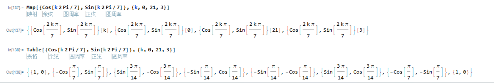
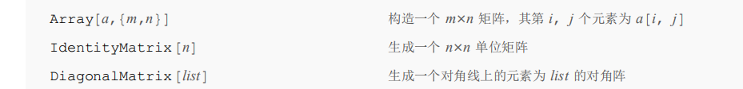
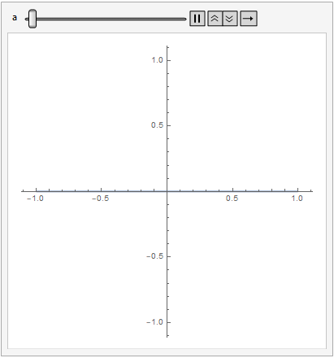
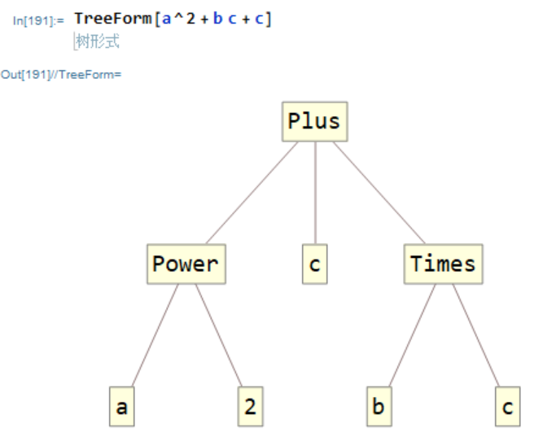

MMA---基础
Mathematica的基本知识
基本操作
获取函数的帮助： ?函数名，支持通配符
s输入函数名，ctrl shift K ： 快速获取函数参数信息
结束进程：Alt + .
运行当前行
Shift + Enter加分号，作用是不让这个语句输出
菜单栏设置
格式
样式表--样式表选择器
给笔记本换颜色、格式等等，很酷炫
单元
转换成
TratitionalForm : 传统形式，会把数学符号都显示出来，例如
StandardForm：标准形式，所见即输入
笔记本历史
这个功能有点意思，可以追踪笔记本的修改记录，看起来很nb
图形
新图形
新建一个绘图区，可以用鼠标画图，看起来不太好用
变量与函数
变量
“=” 与 “:=”的区别
=表示计算出右边的结果后赋值
:= 表示遇到左边这个形式的时候替换成右边的东西
因此定义函数应该用 :=
%表示上一个输出，%%表示上上一个，以此类推或者用
%3表示Out[3]x=. 清除x的赋值
函数
定义函数
f[x_] := x^2
左边用x_，可能是为了将函数的定义与调用区分开
分段函数
/;后跟条件，例如：1
2f[x_] := x /; x>0
f[x_] := -x /; x<=0过程函数
f[参数_] = 语句1;语句2;语句3...
调用函数
- f[x]
- f @ x (前缀调用)
- x // f （后缀调用）
- a ~ f ~ b 中缀调用（对于含有两个参数的函数）
Options[函数名]
获取这个函数有哪些参数
对列表整体使用某个函数
函数有一个性质叫
Listable表示该函数能不能对于一个列表整个操作（即f[{x1,x2,x3}] = {f[x1],f[x2],f[x3]} ]如果有这个性质，可以直接调用，如果没有，可以使用
Map函数，将列表中的每个值映射到另一个列表：1
2
3Map[f,mylist]
相当于
f /@ mylist我感觉有点像matlab里面的 .* 点号运算符
Map可太强大了，甚至可以作用于表达式（比如
Map[f,a+b] = f[a]+f[b])Map第三个参数的含义：
如果输入的第二个参数是多重列表，第三个参数的含义是f作用的层次（最外层1，向里递增）
第三个参数的格式为 n，{n}，{m,n}
n表示作用于1到n层
{n}表示仅作用于第n层
{m,n} 表示作用于m层到n层
1
2
3
4
5
6
7
8
9
10
11//Map at level 1:
In[1]:= Map[f, {{a, b}, {c, d, e}}]
Out[1]= {f[{a, b}], f[{c, d, e}]}
//Map at level 2:
In[2]:= Map[f, {{a, b}, {c, d, e}}, {2}]
Out[2]= {{f[a], f[b]}, {f[c], f[d], f[e]}}
//Map at levels 1 and 2:
In[3]:= Map[f, {{a, b}, {c, d, e}}, 2]
Out[3]= {f[{f[a], f[b]}], f[{f[c], f[d], f[e]}]} Table 和 Map 的区别如上，觉得Map更抽象，Table经常用于生成函数值列表
Thread逐项作用
纯函数（类似于Python里面的匿名函数）
两种定义方法：
Function[{参数列表}, 函数返回值]
g = ( #1 + #2 )&
#加数字代表参数的占位符，&表示这是一个纯函数
纯函数可以配合着Map函数使用
Apply 偷梁换柱
Apply[f,g[x]] = f[x]简写 :
f @@ g[x]变量和函数的清除
Clear[x]
Remove[x]
Clear 与 Remove的区别
清除函数的时候，Clear只是清除了函数的具体定义，调用
?f的时候还不会报错，并且这个函数的性质（例如Listable）也会保留Remove是彻底清除这个符号，再次调用
?f的时候会说没有这个符号清除所有全局变量以及函数定义：
Clear["Global`*"]
处理方程（组）
Solve 解方程
NSolve 求数值解
RSolve 解递推方程，例如
RSolve[{p[n] == a*p[n - 1] + b ,p[1] == 1/(a + b)}, p[n], n]Eliminite 方程组消元
列表
创建列表
- {1,2,3}
Range函数
关于列表的一些函数
以矩阵形式输出矩阵：
函数MatrixForm
解除矩阵的嵌套:
Flatten
Join 合并列表
矩阵纵向拼接：
Join[a,b]矩阵横向拼接：
Join[a,b,2]Union也是合并列表，合并后的列表没有重复元素
Riffle，交错合并列表
Drop 删除列表中的元素（不会改变列表，只会输出新的）
 ReplacePart函数（不会改变列表，只会输出新的）
相关细节
列表中元素的编号从1开始，和MATLAB一样
要索引列表a中的元素应该用 a[[1]]（如果是矩阵用a[[1]][[1]]，或者可以 a[[1,1]]）
获取矩阵某一行：a[[i]]
获取矩阵某一列：a[[All,i]]
获取i到j个元素：a[[i;;j]]
表格
Table函数
Table[expr,spec1,spec2,...]Table[Table[expr,spec2],spec1]expr 是函数表达式
spec是表示变量取值范围以及步长的列表，例如{x,0,10,1}
Table 函数用于生成列表或者矩阵
Grid函数
大概用法是输入一个矩阵，返回一个表格
Frame参数可以设置框线，还有别的参数可以设置颜色
字符串
基本函数
帮助文档的String&Text里面有，暂时觉得没什么用
<> 连接字符串
绘图
2D
用于绘图的函数
- Plot
- ListLinePlot
绘制点集的线条
ParametricPlot
绘制参数函数的图像
PolerPlot 极坐标绘图
VectorPlot 绘制向量图
常用参数
- PlotRange 绘图范围
- AspectRatio 宽高比
- Axes 是否显示坐标轴
- AxesLabel 坐标轴标签
- Tick 坐标轴刻度
- PlotPoint 确定作图时每个单位长度取多少点，调整作图的精细程度
- PlotLabel 给图形增加大标题
- PlotStyle
- ThickNess 线宽
- Graylevel 灰度
- RGBColor 颜色
- Dashing 线的形状
- Opacity 透明度
3D
- PLot3D
- 2D绘图函数大都有其相应的3d绘图函数
同时在一个图中显示两个图像
1 | p1 = Plot[Sin[x], {x, -1, 1}]; |
常用参数
- Boxed 是否给图形加一个框
- BoxRatios 图形立体框在三个方向的 长度比
- ViewPoint 观察点
- Mesh 网格
例子：莫比乌斯环
1 | Clear[r, x, y, z]; |
规则
创建和使用规则
创建规则
x->
a就是一条规则，含义是x取a，他可以放在一个表达式后面，作用是把表达式中的x替换为a:
/.是ReplaceAll的缩写
x可以是任何符号、表达式、甚至是函数，例如：
当然，/.
后面也可以是规则的集合（/.ReplaceAll）
:> 这个符号与
->的区别类似于 = 和
:=的区别
书上举了一个RandomReal的例子
- 也可以把规则赋值给一个符号
使用规则
Slove函数得到的结果是一个嵌套列表中的规则，例如：
1 | {{x -> -1}, {x -> 1}} |
如果是多元，多个解的方程，solve的结果还是二层的嵌套列表，每个子列表中是一个解
利用这个可以画出方程解关于参数的图像
1 | sol = Solve[x+1==a,x] |
多次使用
/. 使用一次 ReplaceAll
//. 使用多次直到表达式不发生改变 ReplaceRepeated
ReplaceReaped还可以设置最大使用次数，第三个参数MaxIterations
ReplaceList 输出多种可能的替换
ReplaceList[...] //Column
(//是函数的后缀使用形式，相当于Column[ReplaceList[...]])
能让信息以列（本来是列表）的形式输出出来
例子:
交互
Manipulate 交互
第一个参数是要输出的东西（含参数），后面的参数形式为{a,0,10}表示参数名称以及取值范围
Animate 动画
输入和Manipulate差不多，输出时参数随时间变化的动画，可导出为gif
例如：

I/O
MMA可以很方便的导入和导出文件、图片、表格等等
导入
从本地导入：
Import["地址/文件名"]
从网站导入：
Import["网址","选项"]
导出
Export[]
表达式
为什么要在这里专门讲一下表达式？不仅因为表达式MMA语法中的重要定义，还因为这里的表达式不像我们平常理解的那样，还有别的含义
列表、数学公式、图形等，在MMA中都可以看做是表达式
FullForm函数用于获取表达式的标准形式，例如
| 常用形式 | FullForm |
|---|---|
| a+b+c | Add[a,b,c] |
| {a,b,c} | List[a,b,c] |
所以一个表达式可以看做是由一个Head和后面的元素组成的
Head函数可以用于获取表达式头部，例如
Head[{a,b,c}]的输出是List，用下标0索引也可以得到Head
当然，也可以自己随便定义Head，例如myhead[1,2,3],这个表达式的Head就是myhead
既然列表是特殊的表达式，关于列表的一些函数（例如Append,Join,Sort,Reverse,Take,Length...）都可以用于普通的表达式
表达式层层嵌套可以形成树
函数TreeForm可以输出表达式的树形式
例如

可以说是很炫酷又没卵用了））
Position搜寻某个元素在表达式中的位置，可以指定搜索的层数
Level获取表达式某一层的元素（从上到下层数变大）
Depth获取表达式的最大层数，也就是高度
编程
条件
If[test,body1,body2,body3]test为真，执行body1；test为假，执行body2；test无法判断真假，执行body3
Which[条件1,表达式1,条件2,表达式2...]依次检查条件，整个表达式取第一个条件为真对应的表达式值，否则表达式取值为Null
循环
Do[Expr,{imin,imax,step}]从imin到imax执行语句Expr
While[Test,Body]For[start,test,incrace,body]和C语言的For循环语法差不多
矩阵运算
我觉得这个软件矩阵运算没有MATLAB方便，没有左除右除那些运算，下面是一些常用函数
.点号表示矩阵乘法- Inverse 求逆
- MatrixPower 求幂
- Transpose 转置
- MatrixRank
- RowReduce 化为行最简形
- NullSpace 求基础解系
- Orthogonalize 矩阵正交单位化